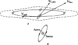
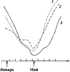

Страницы авторов "Тёмного леса"
Литературный Кисловодск и окрестности
Пишите нам! temnyjles@narod.ru
Поступила 3 декабря 1998 г.
Представлено членом редколлегии В.И. Старостенко
Квазiспонтанними варiацiями названi варiацiї, якi на перший погляд здаються спонтанними, але фактично вони стимулюються деяким iнформацiйним впливом, умовно названим iррадiацiєю. Iнформацiйними називають такий вплив i взаємовплив, матерiальний носiй яких не iдентифiкований. Отже, фiзична суттєвiсть явища залишається не зрозумiлою. Росiйський астрофiзик М.О. Козирєв (1908-1983) показав: якщо в системi ентропiя зростає i органiзацiя зменьшується (як це прийнято у термодинамiцi i ще веде до висновку про "теплову смерть"), то остання не зникає, але випромiнюється як потiк Z-радiацiї. Останнiй поглинається iншими системами та стимулює в них процеси самоорганiзацiї i розвитку. Джерелами Z-радiацiї (iнформацiйного впливу) є будь-якi системи, в яких вiдбуваються незворотнi процеси та збiльшується ентропiя. Це сонячна активнiсть (Z-радiацiя в багатьох випадках попереджує появу вiдповiдаих активних утворень на поверхнi Сонця), геодинамiчнi i атмосфернi процеси, технiчнi та бiосфернi явища. Давачами (приймачами) Z-радiацiї є будь-якi достатньо самоорганiзованi системи, якi вiдчутно змiнюють свої параметри при змiнi ентропiї. Це годинники (торсiоннi, кварцевi, атомнi), резистори, швидкостi деяких квазiспонтанних процесiв (ядерного розпаду, хiмiчних реакцiй). Геофiзичний монiторинг квазiспонтанних варiацiй вважається перспективним для прогнозу природних i техногенних катастроф, iнтервалiв сприятливих i несприятливих для здоровя людей, бiосферних i технологiчних процесiв.
Quasispontaneous variations are variations which look like spontaneous ones but really are stimulated by an informational influence. Informational influence is an influence, the material carrier of which is not identified; then the physical essence of the phenomenon is not understood. The russian astrophysisist N.A.Kozyrev (1908-1983) gave evidence that if in a system entropy increases and organization decreases, the latter one is not lost (as accepted in thermodynamics, and which leads to conclusion about "thermal death") but is eradiated as a stream of negentropy, or organization (let us call it Z-radiation). The latter removes itself to be absorbed by some other system (s) to stimulate processes of selforganization and development therein. The sources of Z-radiation (= informational influence) are any systems where irreversible processes occur and entropy increases. Strong sources are: Sun (Z-radiation in many cases pass ahead of the corresponding active objects appearance on the Sun surface), cosmic events, geodynamic and atmospheric processes, preparation and realisation of earthquakes, technical processes, energetics, vital activity of biosphere, human beings and so on. Sensors of Z-radiation are any sufficiently selforganized system that noticeably changes its characteristics when entropy changes. Sensors proved their efficiency are: torsion pendulums, quartz and atomic frequency (time) standards, resistors, velocity and some peculiarities of quasi-spontaneous processes (radioactive decay, chemical reactions ...). The sensors can be set for geophysical monitoring of Z-radiation which, as it is expected, can give data for prognosis of dangerous natural and technical hazards, prognosis of time intervals favourable and unfavourable for human health, for biospheric and technological processes.
Основные понятия и терминология. Физические свойства веществ и физические параметры (Xi) систем определяются их составом, структурой, состоянием, которые могут зависеть и от внешних условий и воздействий: температуры, давления, влажности, механических воздействий, электромагнитных полей... Некоторые из этих зависимостей хорошо изучены, например, температурные, для которых определены соответствующие коэффициенты ait = dX/dT. И если вещество или система помещены в стабилизированные условия T0, которые поддерживаются с погрешностью +-ΔT, то мы ожидаем, что параметр Xi0 = Xi(T0), будет стабилен в пределах +-aitΔT (для малых ΔT предполагается линейная зависимость X(T)), если при этом нет влияния от других внешних воздействий. Минимизируя все известные внешние воздействия, можем предсказать, в каких пределах +-ΔXi параметр Xi должен быть постоянен.
Если в ходе эксперимента получены изменения ΔX(t), превышающие предсказанное ΔX, то такое поведение можно рассматривать как аномальное. Оно может иметь различные причины.
Отделить вторую причину от первой можно путем пространственного анализа при предположении, что внешнее воздействие охватывает значительное пространство, в пределах которого можно поместить несколько однотипных датчиков. Если вариации, независимо зарегистрированные в ряде разнесенных пунктов, подобны, т.е. хорошо скоррелированы, то можно утверждать о наличии общего внешнего воздействия, синхронизирующего вариации.
Спонтанными называют такие процессы, которые происходят самопроизвольно, т.е. вызваны внутренними присущими данному объекту (системе, субъекту) непроявленными качествами и силами (Webster dictionary). Спонтанные хаотические флуктуации характерны для сложных нелинейных неравновесных диссипативных систем, проходящих в своем развитии через последовательность неустойчивых состояний (точек бифуркации), в которых система становится экстремально чувствительной к внешним воздействиям, даже очень слабым ("эффект бабочки" [1], способной взмахом крыльев изменить погоду большого региона, если действие будет произведено в нужном месте в нужное время и в нужном направлении). Таким образом, в состоянии неустойчивости система может воспринимать самые слабые внешние воздействия, даже не регистрируемые известными методами физических измерений. Такие воздействия принято называть энергоинформационными или просто информационными. Мы будем пользоваться только последним термином, придавая ему несколько более широкий смысл.
Информационными будем называть такие воздействия и взаимодействия, в которых не удается отождествить материальный носитель передаваемой информации и, следовательно, физическая сущность явления остается не понятой.
В работе акцентируется внимание на вариациях, синхронных на некоторой площади или глобально, что указывает на существование внешнего синхронизирующего воздействия. В этом случае наблюдаемые вариации следовало бы называть индуцированными, вынужденными. Однако такая терминология используется для "сильных" воздействий, в которых причина неизбежно вызывает определенное следствие, что обеспечивает повторяемость результатов однотипных экспериментов.
При "слабых" воздействиях, к которым следует отнести и информационные воздействия, одна и та же причина или лучше сказать действие может привести или не привести к некоторому определенному результату, в зависимости от того, готова ли система отреагировать на поступивший сигнал или не готова? Поэтому требование повторяемости внешне казалось бы однотипных экспериментов здесь не должно выдвигаться. Каждый эксперимент уникален и действует принцип "нельзя дважды войти в одну и ту же реку". Все же элементы повторяемости сохраняются для информационных воздействий, ее описание требует специального рассмотрения с учетом конкретных условий экспериментов.
Поскольку природа внешнего информационного воздействия неизвестна, то нельзя провести четкую грань между относительно простыми и сложными неравновесными системами. Все сказанное может служить основанием принятого термина квазиспонтанные вариации. На первый взгляд они представляются спонтанными, но синхронизм вариаций в разнесенных точках и корреляция с солнечнокосмическими явлениями указывают, что они, по-видимому, вызваны некоторым внешним воздействием неидентифицированной природы.
Среди множества возможных гипотез о природе воздействия выделим следующие.
Концепция Козырева. Общепризнано, что пространство обладает не только геометрическим свойством протяженности, но также и физическими свойствами. В геометрии четырехмерного мира Минковского, лежащей в основе теории относительности, временная координата ict считается равноценной пространственным координатам и поэтому естественно ожидать, что время имеет не только геометрическое свойство длительности, но может обладать и физическими свойствами. Благодаря этим свойствам время может воздействовать на физические системы, на вещество и быть активным участником мироздания. Активный контакт времени со всем, что происходит в Мире, должен приводить к взаимодействию, т.е. к возможности обратного действия на свойства времени со стороны происходящих процессов. Свойство времени, характеризующее его активность, Козырев назвал плотностью. Он экспериментально показал, что если в системе происходит рост энтропии и, следовательно, потеря организованности, то эта организованность не пропадает, а "излучается" и уносится временем, чтобы быть переданной какой-то другой системе (системам) там, где она будет поглощена. Большую часть плотности времени поглощают близлежащие системы, с удалением эффекты убывают. При поглощении времени степень организованности системы повышается, т.е. в ней происходит негэнтропийный процесс, например, увеличивается жесткость нити крутильного маятника, уменьшается электрическое сопротивление резистора, увеличивается собственная частота колебаний кристалла кварца и т.д. Эти изменения могут быть зарегистрированы, если любой из упомянутых датчиков включен в чувствительную схему и изолирован от температурных, механических и электромагнитных помех. Козырев в качестве детекторов плотности времени использовал вибрирующие весы и отвесы, несимметричные и изотропные (дисковые) крутильные маятники, фотоэлементы, ртутные термометры, резисторы, кварцевые генераторы (возможно использование многих других детекторов). Воздействие времени принципиально отличается от воздействия силовых полей: оно не содержит импульса, но может передавать энергию и момент вращения [5].
Из изложенного следует, что Второе начало термодинамики, сформулированное для замкнутых систем, в реальном Мире не выполняется, так как замкнутых систем нет, все системы взаимосвязаны посредством времени. Организованность при диссипативных процессах, сопровождающихся ростом энтропии в системе, не уничтожается, а уносится временем в другие системы, внося в них организующее, а в определенных условиях, возможно, и творческое начало. Эффекты активных свойств времени в обычных физических системах невелики и обычно воспринимаются или как случайный шум, или как погрешность неизвестной природы, в итоге активность времени до сих пор не идентифицирована в системе научных знаний. Поскольку термин активность или плотность времени трудно воспринимается, в дальнейшем будем, следуя Чижевскому [6], пользоваться также термином Z-излучение или Z-радиация.
Ход времени ic2. Кроме существенно переменного свойства времени - активности, Козырев ввел константу хода времени. Он исходил из трех аксиом [5, с. 337, 365].
В работе [7] предложена альтернативная трактовка, в которой как модуль, так и направление вектора хода времени предполагаются константами нашего участка Вселенной в данную эпоху. И далее в духе причинной механики Козырева предложена гипотеза о том, что c2 равно линейной скорости абсолютного движения Земли, образованного суперпозицией космологических вращений: Земли вокруг Солнца, Солнечной системы вокруг центра масс Галактики, Галактики вокруг своего Аттрактора и так далее (рис. 1, а). В последние годы абсолютное движение определено по астрономическим, физическим и гелиогеофизическим данным [7], наиболее точно - по ди-польной части микроволнового фонового радиоизлучения: Vc,абс = [Vc,абс = 360(15) км/с, α = 170(2)°, δ = -7(2)° в экваториальной системе координат], т.е. Солнечная система движется в направлении созвездия Чаши близ его границы с созвездием Льва. Плоскость земной околосолнечной орбиты практически параллельна Vc,абс и это, по-видимому, не случайно.
Орбитальное вращение Земли обусловливает периодическое изменение ее абсолютной скорости: она максимальна в декабре, минимальна в июне с годовой вариацией плюс-минус 30 км/с (рис. 1, б). И если абсолютное движение влияет на земные процессы (через причинные силы или как-либо иначе), то это влияние может обусловливать сезонный ход этих процессов.
Одним из основных следствий причинной механики является вывод о киральности нашего Мира и эта киральность будет описываться ортом i, если его рассматривать как константу. Можно предположить, что орт i лежит в плоскости, ортогональной Vc,абс. Для одиночного вращения орт i был бы направлен вдоль оси вращения. Как он будет определяться для иерархии вращений пока не ясно, и даже когда закон сложения будет установлен, нам неизвестны самые крупномасштабные космологические вращения, которые должны быть учтены при сложении. Остается экспериментальный путь определения i и,если его удастся надежно измерить, то это даст возможность приступить к решению обратной задачи - определению размера Вселенной в смысле, сколь удаленные космологические вращения влияют на структуру пространства и времени нашего Мира (нашего участка Вселенной)? Возможно, на этом пути удастся внести некоторую ясность и в проблему центра тяжести Вселенной, поставленную Махом.
|  |
Рис. 1. Абсолютное движение Земли и его вариации [7]: а - при движении солнечной системы по галактической орбите (Vop6 - скорость вращения солнечной системы вокруг центра Галактики; Vгал - скорость вращения Галактики вокруг своего Аттрактора; Vc,абс - абсолютная скорость Солнечной системы в современную эпоху, равная 360 км/с, через плюс-минус половину галактического года (110 млн лет) она составит около 800 км/с. Штрихами дан контур сечения Галактики); б - при годовом вращении вокруг Солнца. |
Корреляция Земных процессов с Солнечной активностью. Вариации солнечной активности вызывают на Земле различные эффекты: магнитные и ионосферные возмущения, полярные сияния, вариации атмосферного электричества и земных токов. Эти явления изучаються солнечно-земной физикой и причинно-следственная цепочка их формирования в основных чертах изучена.
Солнечные ритмы обнаруживаются также во множестве других природных процессов (температура и давление воздуха, количество осадков, колебания климата, землетрясения, частота и интенсивность гроз, бурь, ураганов, смерчей и др,), в органическом мире (рост деревьев - толщина годичных колец, урожай злаков, количество и качество вина; время и пышность цветения растений; размножение и миграция насекомых, рыб, птиц, животных; эпидемии; частота ухудшений течения болезней, несчастных случаев, преступлений, массовых истерий и т.д.) и даже в исторических процессах [6].
Возникает проблема объяснения механизмов столь разнообразных проявлений. Рассмотрим известные солнечные воздействия: 99% энергии солнечного излучения приходится на видимый и ближний инфракрасный диапазон &lamda; = 0,3 - 4 мкм. Однако это излучение характеризуется высокой стабильностью (солнечная постоянная), его вариации не превышают 0,2% при максимальном изменении солнечной активности. С уменьшением длинны волны вариабельность излучения возрастает. Так, поток излучения водородной линии &lamda; = 0,1216 мкм изменяется в 2-3 раза в течение 11-летнего цикла и до 30% за 27-дневный цикл, а поток рентгеновского излучения &lamda; = 0,1 - 1 нм изменяется в течение 11-летнего цикла на 2 - 3 порядка. Ультрафиолетовое и рентгеновское излучения сильно поглощаются в верхних слоях атмосферы и, по-видимому, не могут быть основным агентом, передающим солнечные ритмы земным системам.
Длинноволновая часть спектра солнечного излучения, радиоволны, также сильно изменяются в зависимости от солнечной активности, но ее энергия очень мала. Поэтому, если заранее нельзя отрицать возможность информационного воздействия радиоволн солнечного и космического происхождения на биологические объекты, то влияние на физические системы объяснить ими вряд ли возможно, особенно если учесть "засоренность" земной среды обитания радиоизлучениями земного происхождения.
То же самое можно сказать о сверхнизкочастотных электромагнитных полях (СНЧ ЭМП) с периодами 1-105 с. Эти поля являются составляющей геомагнитной активности, которая формируется в основном солнечными корпускулярными потоками и поэтому запаздывает на 1-2 сут. от событий на Солнце. Энергия этих полей в средних и низких широтах весьма мала, но они обладают высокой проникающей способностью - проходят через многокилометровые толщи горных пород и через тонкие металлические экраны. Поэтому многие исследователи солнечно-биосферных корреляций связывают воздействие солнечной активности с СНЧ ЭМП. Возможно, что в отдельных случаях это объяснение правильно, но признать его универсальным, по-видимому нет оснований. СНЧ ЭМП имеют сравнительно малую информационную емкость и поэтому трудно представить их избирательное влияние на биологические объекты. Еще труднее объяснить их воздействие на физические системы. Такой трактовке не соответствуют также данные о временных сдвигах, а именно, в тех случаях, когда воздействие на земные системы происходит без задержки, т.е. одновременно с событиями на Солнце или даже с опережением их. Такие факты представляют особый интерес.
М. Таката [8] в течение 19 лет исследовал свойства крови. Оказалось, что скорость осаждения белков крови имеет четко выраженный суточный ход, причем резкое изменение скорости осаждения наступает за 6-8 мин до астрономического восхода Солнца независимо от облачности, погоды, времени года, местоположения экспериментальной установки. Таката делает вывод о наличии в солнечном излучении некоторой биологически активной компоненты с проникающей способностью, повышенной по сравнению с электромагнитными полями.
Эффект Чижевского-Вельховера [6]. На основании многолетних исследований корине-бактерий (это молочнокислые, дифтерийные и другие бактерии, которые в ходе развития могут изменять окраску) Вельховер установил, что их поведение отражает и во многих случаях опережает эффекты солнечной активности. "Это становится понятным, если мы вспомним, что очаги возмущений возникают первоначально в глубине Солнца - ни глаз астронома, ни фотографическая пленка на них не реагирует, но специфические излучения, выбрасываемые ими в мировое пространство, встречают живую клетку бактерий или нервный аппарат человека и животного и немедленно влияют на него. И только по прошествии некоторого времени очаги возмущения появляются на поверхности Солнца и становятся доступными визуальному наблюдению и фотографированию. Следовательно, нет ничего невероятного в том, что микробиологический препарат вскоре станет наиболее чувствительным астрономическим прибором, который будет предсказывать некоторые физические процессы на Солнце" [6, с. 287].
Во Франции в 20-е годы обширные исследования выполнили Фор, Сарду и Валле [6, с. 294]. Они обнаружили, например, что пациенты, страдающие болями различного характера (ревматизм, болезни нервной системы, сердца, желудочно-кишечного тракта) испытывают приступы боли в одно и то же время на больших территориях независимо от места и условий жизни. Такой же синхронизм обнаружился для многих других заболеваний, обострений, нервных припадков, самоубийств, преступности, смертности. Сопоставление с метеорологическими факторами не выявило значимых корреляций, но почти все случаи прохождения солнечных пятен через центральный меридиан совпали с перечисленными проявлениями. При этом "необходимо принимать в расчет не только прохождение пятна через центральный меридиан Солнца, но два дня перед и два дня после этого прохождения. Опыт показывает, что магнитные пертурбации и полярные сияния следуют обычно через два дня после прохождения пятен, а между тем болезненные явления часто случаются за два дня до этого прохождения" [6, с. 299].
Анализ этих и многих других данных указывает" на то, что воздействием электромагнитных, излучений и корпускулярных потоков Солнца трудно объяснить все наблюдаемые закономерности, что, по-видимому, существует некоторое специфическое воздействие (Z-излучение по Чижевскому, поток времени по Козыреву), которое может излучатся как из видимых, так и из невидимых на поверхности фотосферы активных образований, т.е. из глубин конвективной зоны Солнца.
Исследования Пиккарди [9]. Высокую чувствительность живых организмов к внешним воздействиям Пиккарди предполагает обусловленной особыми свойствами воды. Он рассматривает процессы активации воды, анализирует аномальность ее свойств при температуре 30-40°C, т.е. в диапазоне наиболее высокоразвитой теплокровной жизни. Для подтверждения своей идеи он ставит опыты с физико-химическими детекторами на основе воды, высокая чувствительность которых обеспечивается гетерогенностью и неравновесностью системы так, что скорость фазового перехода является чувствительным и легко наблюдаемым индикатором слабого воздействия. Пиккарди использовал два основных процесса: гидролиз трихлорида висмута с выпаданием осадка оксихлорида висмута и полимеризацию акрилонитрила в водной среде.
|  | Рис. 2. Тесты Пиккарди: скорость осаждения оксихлорида висмута с экраном в виде медной пластины (кривая 1), то же без экрана (кривая 2) и числа Вольфа (кривая 3) в 1954 г. На оси абсцисс отложены 27-дневные интервалы, равные периоду обращения Солнца вокруг своей оси [9, с. 56]. |
Пиккарди исследовал влияние на скорость процесса металлических экранов в форме пластин. Влияние наблюдалось, оно зависело от материала и не зависело от толщины пластины. Более того, массивная металлическая пластина и металлический порошок, рассеянный в изоляторе (краска с металлическим пигментом) оказывали практически одинаковое действие. Такое поведение можно объяснить тем, что воздействие изменяется не вследствие поглощения в экране, а благодаря частичному отражению от него (или рассеянию в случае порошка). Отражаться же могут не только электромагнитные поля, но и поток времени [5].
Пиккарди и его последователи проводили наблюдения с физико-химическими процессами при различных условиях экранирования и активации воды в разных странах. Анализ материалов показал, что имеется глобальный фактор солнечного происхождения, синхронизирующий скорость физико-химических реакций. Сопоставление показало высокую корреляцию тестов Пиккарди с отдельными магнитными бурями и солнечными вспышками, в целом с солнечной активностью. На рис. 2 представлен ход тестов Пиккарди в период глубокого минимума солнечной активности в первой половине 1954 г. и начала ее подъема к максимуму 1957 г. Поведение тестов с экраном и без него почти одинаково и на фазе подъема солнечной активности тесты Пиккарди опережают числа Вольфа на два оборота Солнца, т.е. примерно на 55 дн.
Этот результат указывает на то, что активные образования нового 19-го цикла уже существовали в конвективной зоне Солнца и посылали к Земле свое специфическое излучение еще за два оборота до своего "всплытия" на поверхность фотосферы. Такие опережающие эффекты наиболее четко можно наблюдать именно при переходе от глубокого минимума к резкому росту солнечной активности, что обычно наблюдается между четным и нечетным циклами, как это было в 1954, 1976 и ожидалось в 1998-1999 гг.
Основные выводы.
1. Lorenz E.N. Deterministic nonperiodic flow // J. Atmospheric Sci. - 1963. - 20. P.130-141; Лоренц Э.Н., Детерминированное непериодическое течение // Странные аттракторы. - М.: Мир, 1981. - С. 88-116.
2. Trofimenko A.P. Black holes in cosmic bodies // Astrophys. Space Sci. -- 1990. -- 168. - P.277-292.
3. Trofimenko A.P., Garin V.S. On possible small black holes identification at the Earth surface // Earth, Moon and Planets. -- 1993. -60. -- P.191-197.
4. Герловин И.Л. Основы единой теории всех взаимодействий в веществе. - Л.: Энергоатомиздат, 1990. - 432 с.
5. Козырев Н.А. Избранные труды. - А.: Ленингр. гос. ун-т, 1991. - 445 с.
6. Чижевский А.Л. Земное эхо солнечных бурь. - М.: Мысль, 1976. - 367 с.
7. Рокитянский И.И. Абсолютное движение как источник возникновения причинных сил // Докл. НАН Украины. - 1995. - N10. - С.76-80.
8. Tokata М. Archiv fur meteorologie /У Geophys. Bioklimatologie. Serie B. - 1951. - S.2.
9. Пиккарди Д. Химические основы медицинской климатологии. - Л.: Гидрометиздат, 1967. - 96 с.
Страницы друзей "Темного леса"
Последнее изменение страницы 29 Feb 2020
{kind=link}
{kind=link}